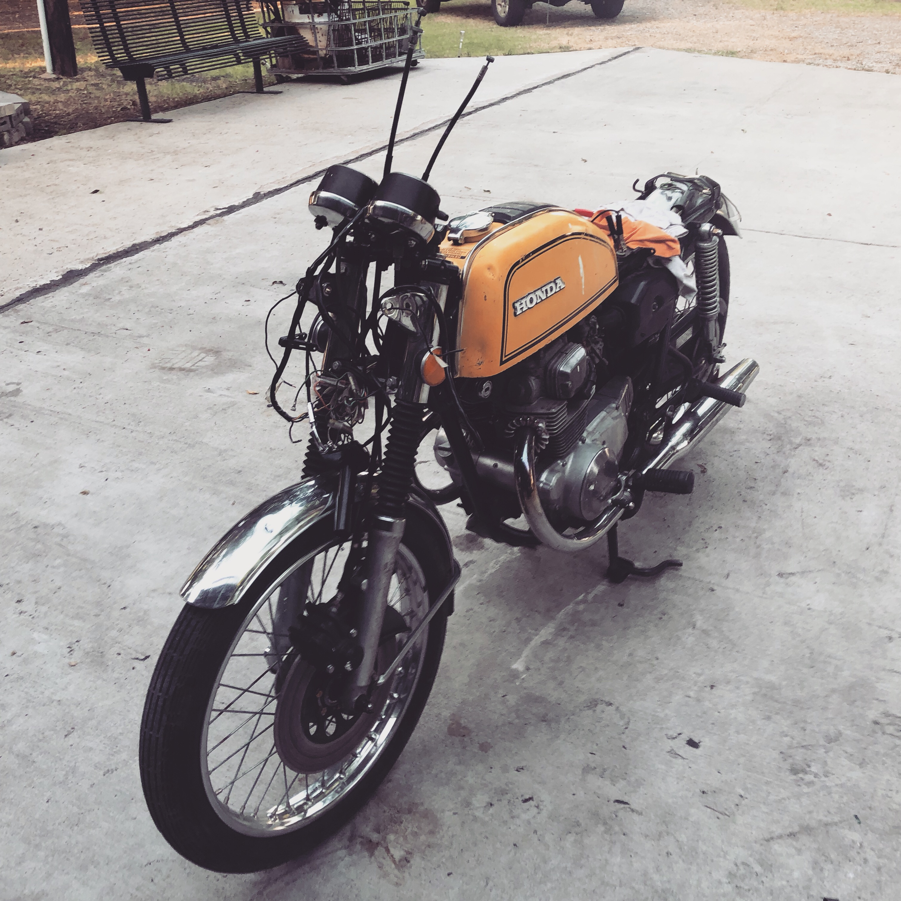
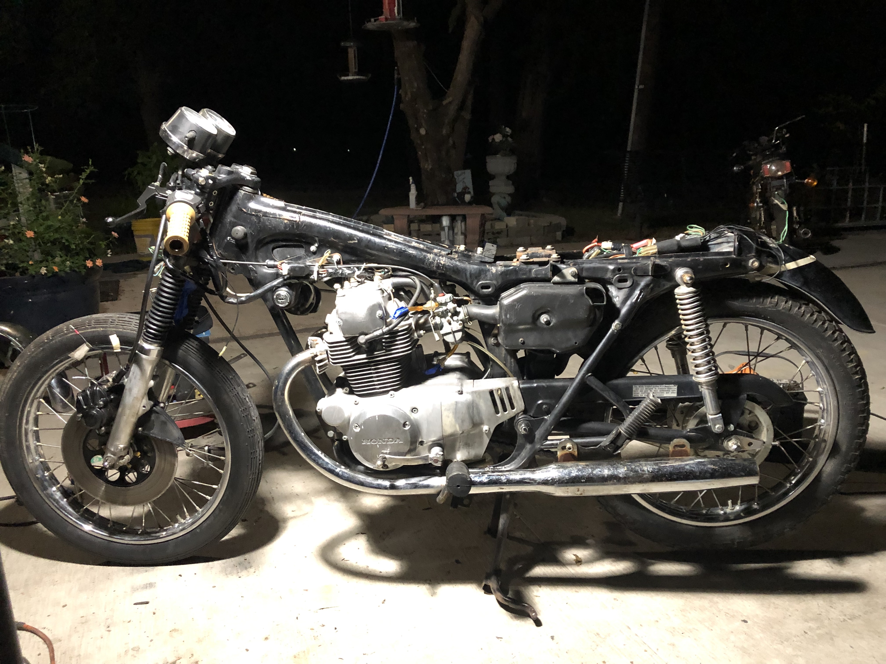
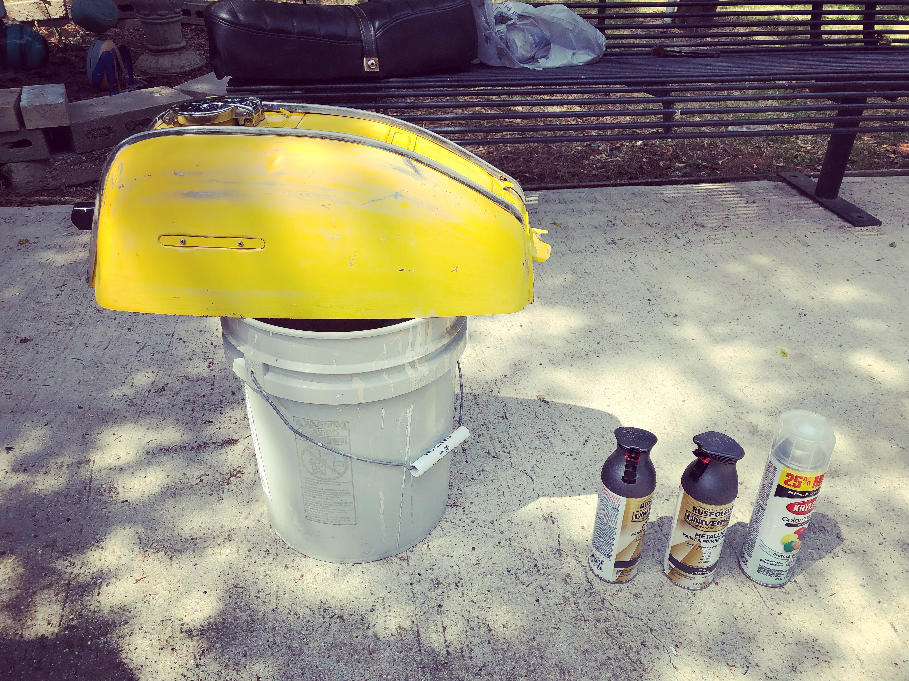
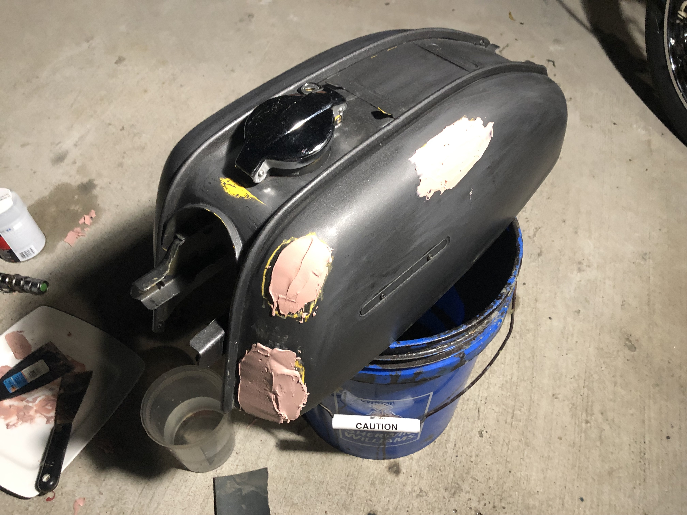
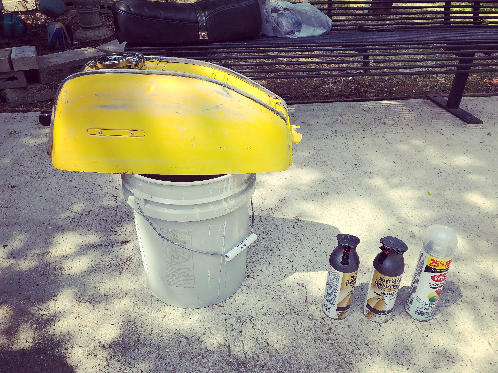
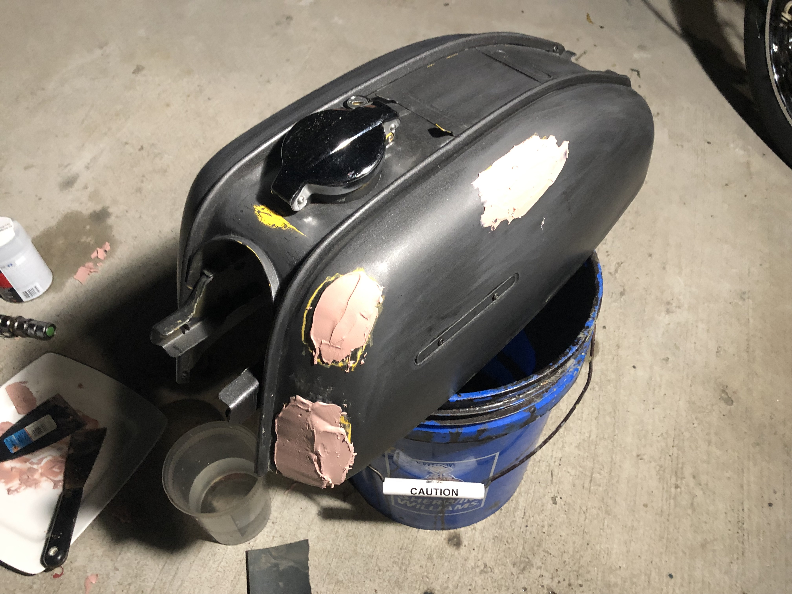
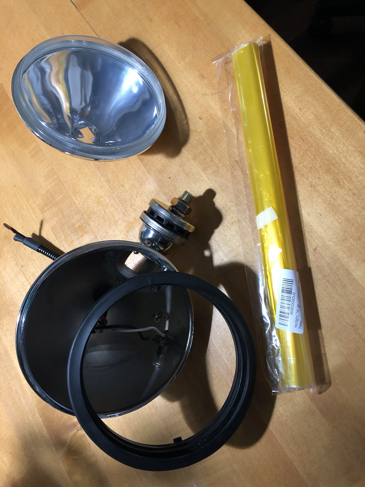

The Build
Taking the bike apart
First step was to remove all the major parts from the bike. This include parts no longer needed or wanted and also parts that would stay but needed repair.
 
New Handle Bar
I decide to put the new handle bars on so it would be easier to move the bike around

Paint Prep
Generally you want to remove everything off the frame and clean it really good before you aplly paint. But for the frame I went the lazy route and used tape to mask off anything I didn't wanted black.
For the tank I had to sand off the old paint and then applied boddy filler to hide all of the dings and dents be for applying paint.
 



Painting the Bike
You really want to do this in a controlled clean enviroment like a painting booth. This way you don't have to worry about dust, dirt and other things causing imperfection to the paint. I had none of these but I think it came out pretty well.


Electrical
I hate electrical. This is probably the least fun part in building a bike.


Making the headlight Yellow
Here I appied a high heat transparent film on to the headlight to make it an amber color.
Putting it all together
Pretty self explanatory